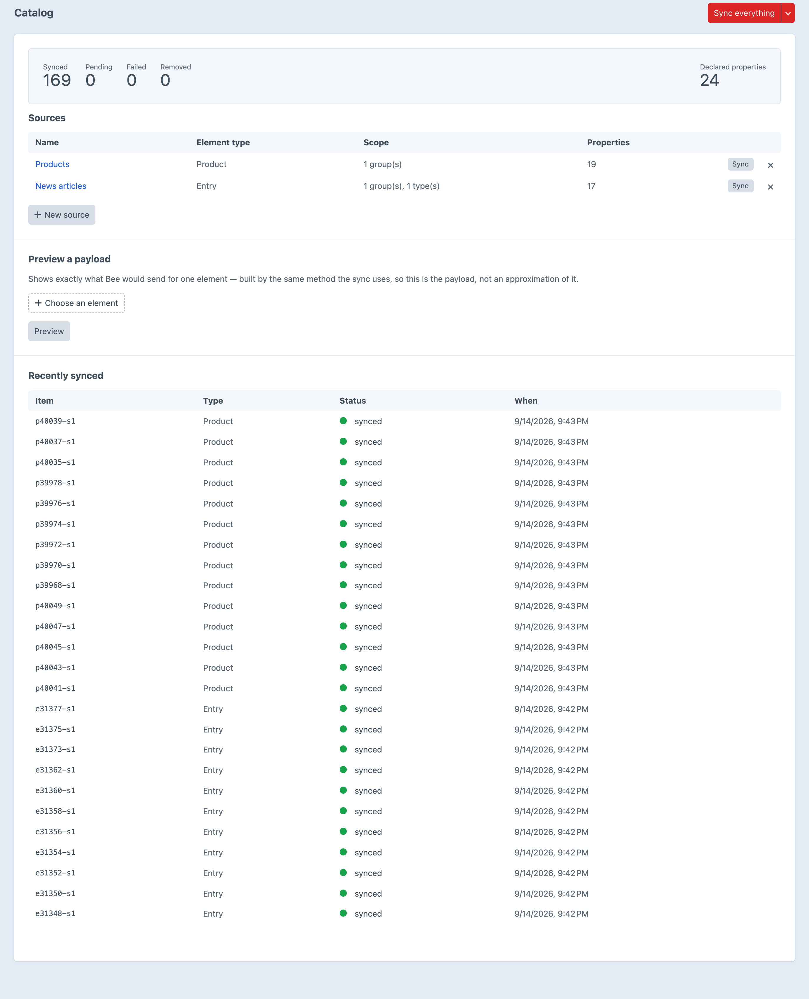
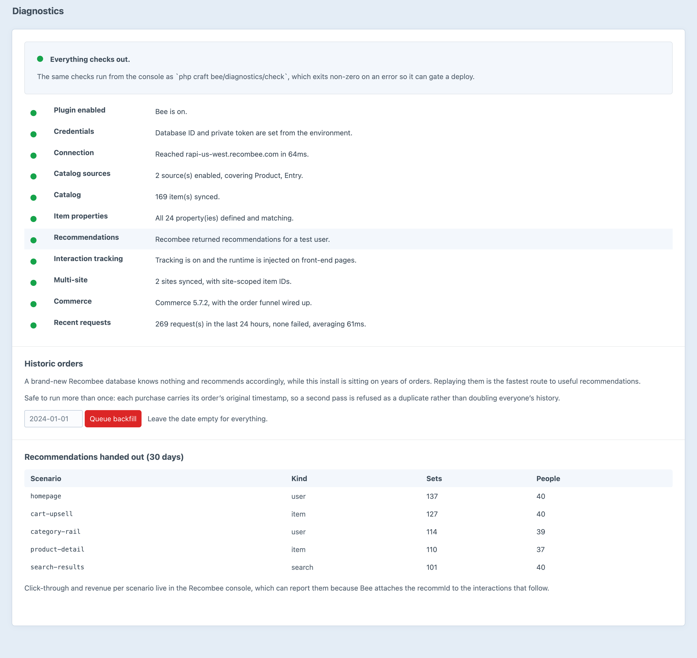

Recombee, wired in.
Catalog sync, interaction tracking, personalised recommendations and search — without writing a line of API code.
Configure a source in the control panel and write one Twig tag. Bee signs every request, keeps the catalog current, records the funnel, and resolves the IDs that come back into real Craft elements.
Which elements, which of them count, and what Recombee is told about each.
A recommender is only as good as what it has watched people do.
Every one hands back Craft elements, not IDs you have to go and look up.
Recombee can only report revenue per scenario if the interactions carry the recommendation that caused them.
Eleven checks, the same ones the control panel runs, exiting non-zero so a pipeline can stop on them.
Every source, every property it declares, and the sync state of each item.

Eleven checks, each with the command that fixes it when it is not.
